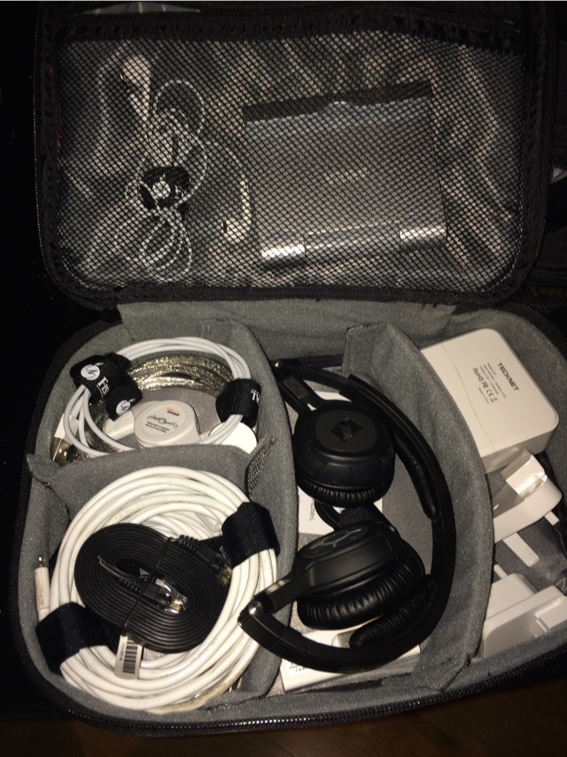
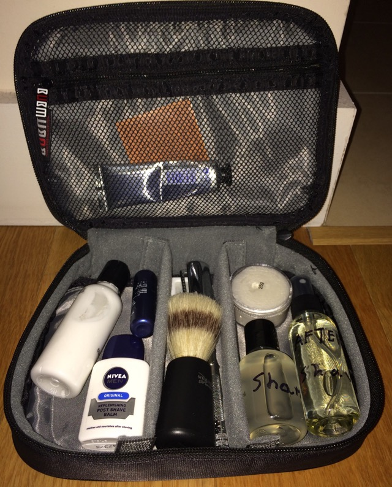
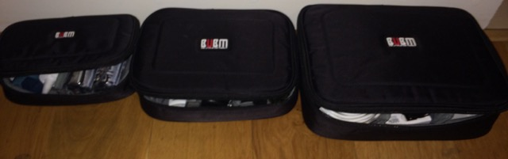
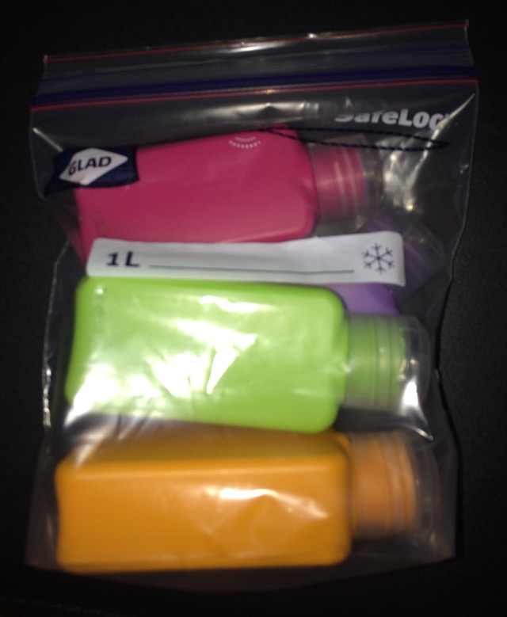

I follow Casey Liss’ blog and recently he had a great post about a technology “go pack”. Lifehacker has written about this over the years, and the Wirecutter has a great article I shared here on this very blog. Also Casey linked to a great post by Katie Floyd on Twitter:
https://twitter.com/KatieFloyd/status/630707145999314946
I finally took the hint / inspiration from all these posts, and I decided time was right to put together my own “go bag”. Here’s a picture of my tech go bag:

What’s in my (tech) go bag:
Case
- The bag is the largest of these three: 3 x BUBM CARRY BAG CASE , really good value these bags
- Cocoon GRID-IT Organiser - Small (black) - plan to use this with battery charger and retractable cables on day trips
Cables
- 2 of AmazonBasics Apple-Certified Retractable Lightning to USB Cable 2 ft
- CHARGEKEY | Lightning Cable, Key Sized
- Apple Earpods
- Headphone splitter - purchased for € 1.50 in a discount store
- Ethernet cable - bog standard, was in drawer
- 4-Port USB charger with removable plug heads - no idea where I got this!?!? Probably DX.com, although I certainly bought others like this there and they are very poor quality, avoid!
and to keep these organised:
- Fisual Chunky Reuseable Hook & Loop Cable Ties - 20 Pack Black - use these to tie cables, also use them around the house, very handy!
Devices
- EasyAcc 10000mAh Ultra Slim Dual USB (2.1A / 1.5A Output) Portable Power Bank
- Edimax BR-6258nL N150 Wireless Personal Hotspot & Travel Route - bought this after seeing Katie Floyd’s recommendation
- Sennheiser PXC 310 BT Headphones - lasted well for years, had these since 2012
Other Holiday Travel stuff / bags
Also with the tech go bag, I’ve created a toiletry bag, contact lens bag etc. This goes with Ebags I bought in 2014, which have been great for travel. I bought some of these from Amazon and then from Ikea and I’m going to see which lasts longer :)
- Microfibre Towel (Purple), travel towel
- Vango Pac Packable Rucksack vs. IKEA KNALLA Backpack
- 7 Piece Air Travel Bottle Set vs. UPPTÄCKA Travel Bottles, assorted colours
- UPPTÄCKA Toilet bag, dark blue
- UPPTÄCKA Packing bag, set of 4 vs eBags Packing Cubes (I bought before)
- Mens/Ladies Hanging Large Toiletry Wash Bag - bought before, hasn’t lasted as well as I would have hoped.
- Vapur Eclipse Reusable Plastic Water Bottle
Some more pictures:


